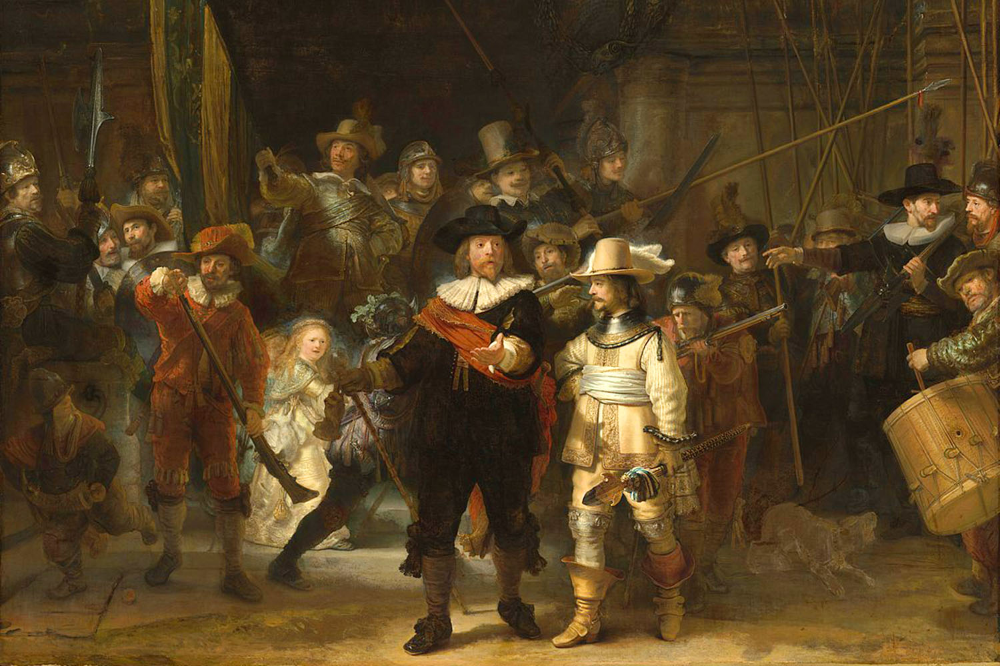
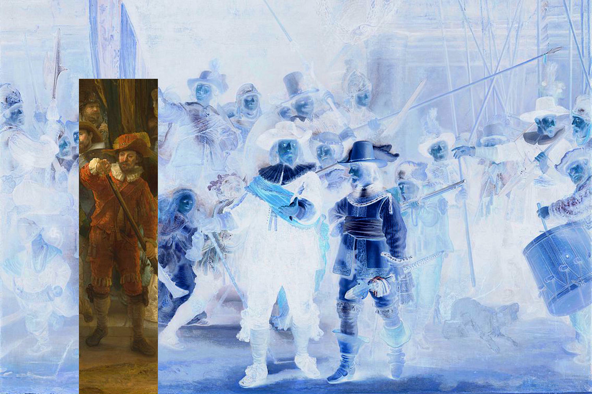

Input Size:
magick identify -ping -format '%w %h' nightwatch.jpg
1500 x 1000
| Value | x/width | y/height |
| Input Size (px) | 1500 | 1000 |
| Output Size (px) | 200 | 800 |
| Focalpoint (factor) | 0.2 | 0.6 |
| Focalpoint Nearest (factor) | 0.2 | 0.4 |
| Scaling (factor) | 0.333333 | 1 |
| Scaling Max (factor) | 1 | 1 |
| IM Offset top/left (px) | 200 | 200 |
| CSS Offset (px) | 0 | 0 |
| CSS Offset before scaling (px) | -200 | -200 |
| CSS Offset after scaling (px) | -200 | -200 |

Imagemagick Hardcrop
magick nightwatch.jpg 100% -crop 200x800+200+200 nightwatch.out.png
CSS Softcrop per Matrix
transform: matrix(1, 0, 0, 1, -200, -200);
CSS Softcrop in Reihenfolge translate/scale
transform: translate(-200px, -200px) scale(1, 1);
CSS Softcrop in Reihenfolge scale/translate
transform: scale(1, 1) translate(-200px, -200px);